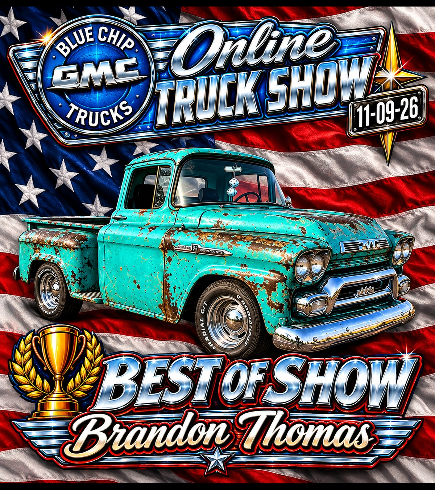
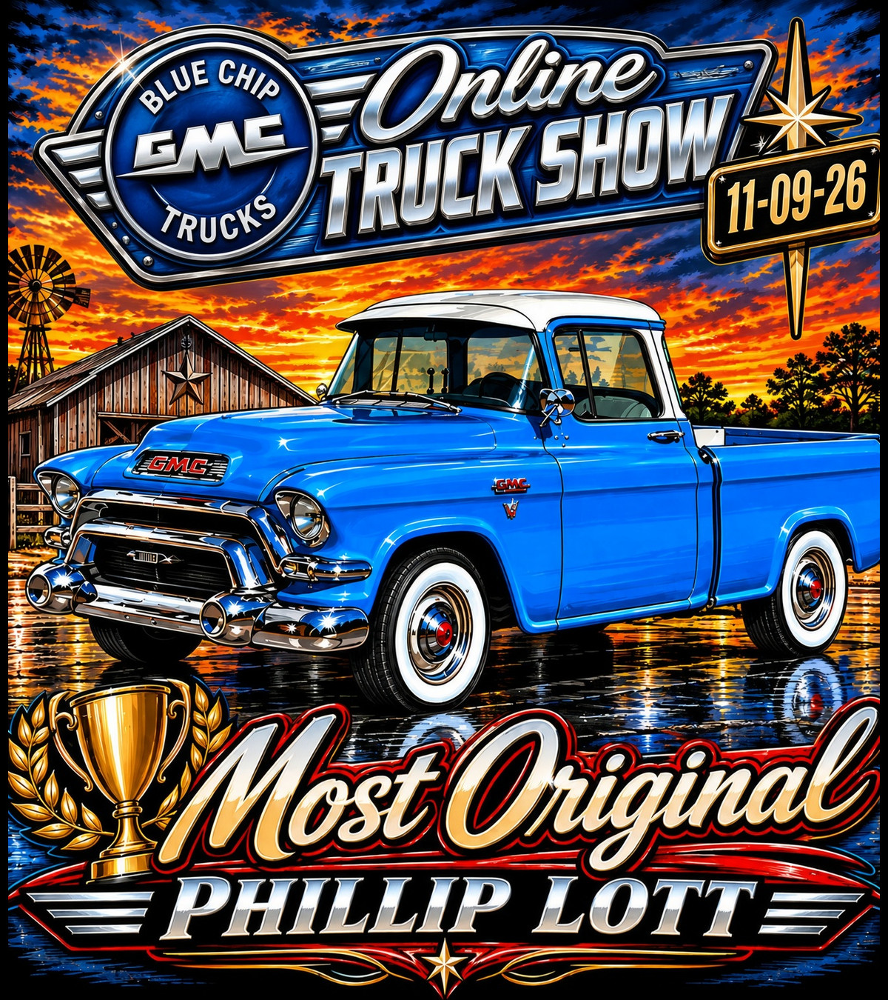
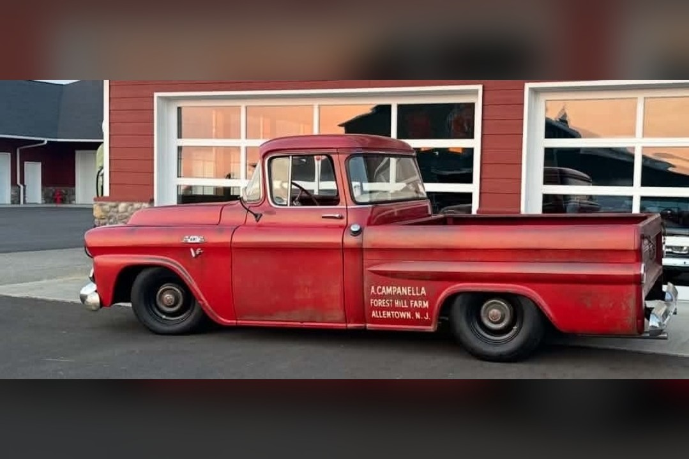
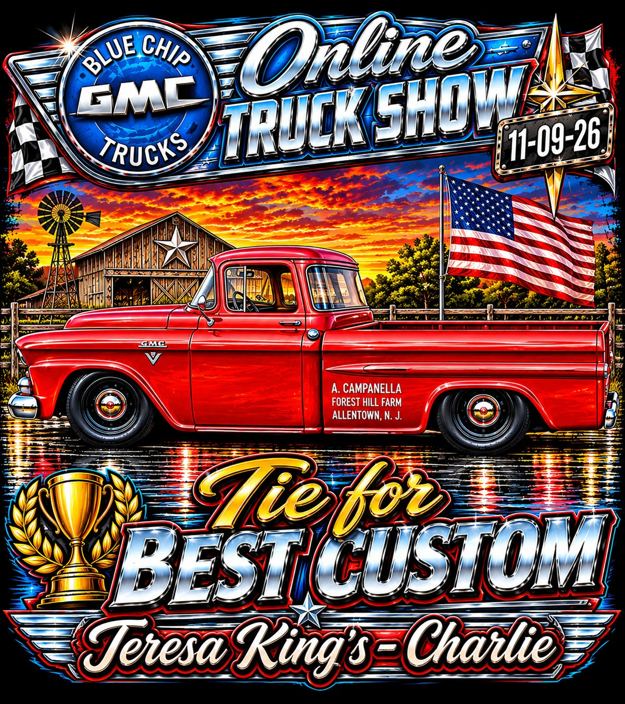
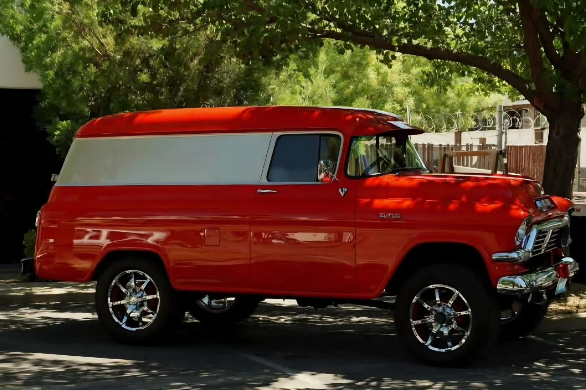

Best of Show and 1st-place winners from the Blue Chip GMC Trucks Online Truck Show in the 55–59 GMC Trucks group. Voting is closed, and these winners are final. Placements were decided by Likes and Loves on each entry in Rusty’s original competition post—each Like or Love counted as one vote. Rusty confirmed final placements and broke ties.
Blue Chip GMC Trucks Online Truck Show 11-09-26
Best of Show
Photo used with permission of Brandon Thomas.

Brandon Thomas · 1959 GMC
With 13 votes, Brandon Thomas’s 1959 GMC drew the highest vote total of any truck in the show, earning Best of Show from the members of Blue Chip 55–59 GMC Trucks.
Worn turquoise patina, bright chrome bumpers and that unmistakable late-’50s GMC face prove a truck doesn’t need fresh paint to steal the show.
1st place by category
Most Original / Stock
Factory-faithful.
Photo used with permission of Phillip Lott.

Phillip Lott · 1955 GMC Suburban Pickup
1st place · 12 votes
Phillip Lott took 1st in Most Original / Stock with 12 votes.
Best Custom
Fully custom.

Photo used with permission of Teresa King.

Teresa King · Charlie, 1958 GMC
Best Daily Driver
Daily driven.

Photo used with permission of Will Keller.
Will Keller · 1957 GMC Panel Truck
Ugliest Truck
Proudly rough around the edges.
Brandon Thomas · 1959 GMC
1st place · 13 votes
Every paint chip on this truck has a story, and the group loved every one of them. Brandon took 1st in Ugliest Truck with 13 votes. See Best of Show above.
Thanks to Rusty for hosting the show and to every member who entered and voted.
SHIRTS
Optional shirts.
A winning truck can have a shirt design for purchase through the 1956 GMC shop. Adding the owner’s name is optional. This is not a free shirt.